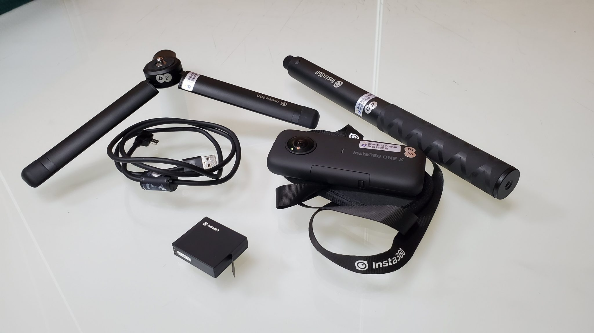
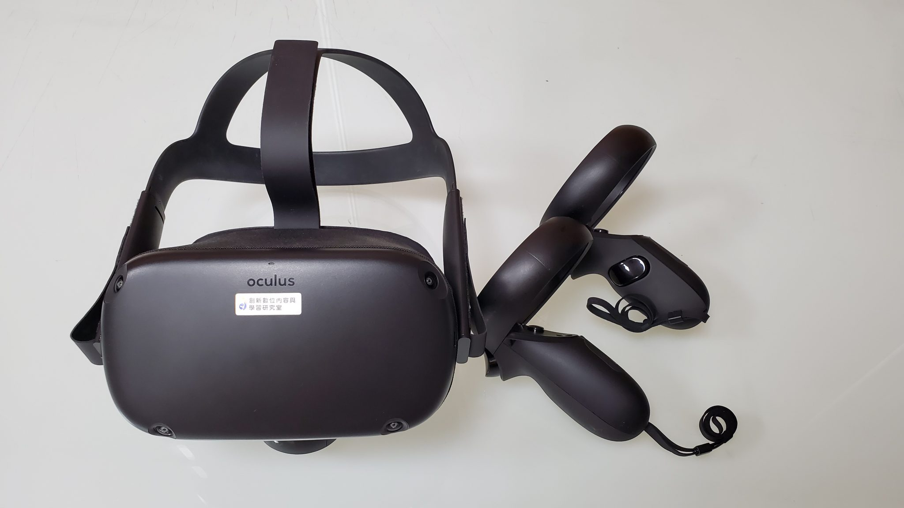

奇幻 玄幻 科幻 魯冰花與阿輝的心： 老師ㄉ影片 中興大學位置
奇幻
奇幻：
「文學家佛斯特（E. M. Forster，1879-1970）在小說理論文集《小說面面觀》中有一〈幻想〉專章，他指出，「幻想」指的是一種暗示超自然之物存在的寫作手法，如在日常生活中引入實際上並不存在的生物，將平常人引進一個超常的境地，不論是過去、未來、地球的內部或第四度空間；深入人格的底層及分割人格；
「為奇幻文學的現代理論奠定基礎的是托爾金（J. R. R. Tolkien）和路易斯（C.S. Lewis）。《魔戒》的作者托爾金，在〈論仙境故事（On Fairy-Story）〉首先對奇幻下了明確的定義，雖然他並未使用「奇幻」(Fantasy)一詞，而以仙境故事（fairy-story）代之。他所下的定義是所有牽涉或使用「faërie」的故事，不論其目的是諷喻、冒險、道德或幻想。而「faërie」一詞指的是「妖精（fairies）存在的國度」，因而包含了許多精靈或妖精以外的東西，矮人、女巫、龍、自然萬物及人都包含在內。」或對另外一種作品作嘲仿（parody）或改編（adaptation）的工作。這可說是奇幻文學最早的專門討論。」
另一位試圖為奇幻文學下定義的是文學與宗教學者普提爾
。他在〈神話與故事〉中認為構成奇幻的要素有四：（一）背景需設在
信史前或已記不清多久以前的過去、（二）必須牽涉魔法（所謂魔法，可定
義為藉符號等方法操縱自然的力量）、（三）必須包含神話傳說般的人物或
生物、（四）牽涉到無法用科學解釋其可能性的事件。
所謂「妖精存在的國度」，指的是克爾特神話裡的仙境國度，
不管是兒童文學的《愛麗絲夢遊仙境》、《綠野仙蹤》、村上春樹的《世界末日與冷酷異境》；不管是湯瑪斯摩爾的烏托邦、或是陶淵明筆下的桃花源；不管是基督教宣揚的天國，或者是佛教中揭示的極樂淨土。在在顯現了人們相信有「另一個世界」可以寄託美好的夢想，成全人類世界的不完美，
因為仙境故事的主要目的是創出另一個世界的真實。
「奇幻文學」最關鍵的元素是作為奇蹟媒介的「魔法」，唯有透過魔法的運作才能使奇幻故事充滿生命力，讓故事中的人物有著近乎救贖的期待。奇幻故事必須發生在另一個空間，排除在我們習以為常的生活場景之外，不管是上天下海，穿梭時空，進入潛意識或是人體內部，只要有一扇通往未知的大門，奇幻的世界就會在你眼前展開。這些故事聽起來或許荒誕不經，或許天馬行空，都還是人們以一般常識可以理解的世界，只是與我們的人生隔著既遙遠又接近的距離，所以奇幻故事必須植根於現實的泥土上，才能發展出架空的真實感覺。
廣義的奇幻文學
包羅了一切有奇幻因素的故事，包括一些幻想、或是無法人為解釋、奇異、神鬼的原素
簡單的分類
第一種是不平凡的人事物出現在平凡的環境中，像是向達倫大冒險系列，再來就是平凡的人事物進入不平凡的環境， 例如小說電玩漫畫中掉入異界的情節，除此之外，哈利波特也是此類，最後第三種就是混合起來，不平凡的人事物與不平凡的環境，像龍槍或是黑暗精靈和喬治馬丁的冰與火之歌。
比如鬼故事就是一種奇幻文學。而像睡美人、灰姑娘，
雖然我們叫它「童話」但就仙子和仙女還有龍(這都是作者幻想出的東西)，也能包羅在奇幻文學中。現在很多人以為有精靈、矮人、甚至是半獸人、巫師才叫奇幻文，但其實是受西方奇幻的影響，比如像是魔戒或是納尼亞這類的故事。中國是有自己的奇幻的故事的，比如像夸父追日、山海經、比如像有那吒出現的封神榜，這都是屬於奇幻的一部分。蒲松齡的聊齋也可以放在奇幻中，因為裡面出現了狐鬼仙，當然像最近很紅的陰陽師也是奇幻文學，
百年孤寂雖然很像寫實小說，但裡面包含了像是升天、或是一些異樣的因子在，某些角度也可被列為奇幻。總而言之，奇幻文學著重在「幻」，只要是有這個元素，就算是了。
「奇幻」這個詞，是翻譯自英文「fantasy」。是由台灣奇幻文化藝術基金
會負責人朱學恆在1992 年台灣的『電玩月刊雜誌《軟體世界》中，開設為期共
一年半的「奇幻圖書館」（Fantasy Library）專欄時固定下來，並沿用至今。』
玄幻
一般認為玄幻小說一詞為香港作家黃易所提出，原意指「建立在玄想基礎上的幻想小說」所謂玄學因子，即是著重道家思想、易經術數、民間傳說、超自然狀態與神秘學，空間學等等面向的解讀、描寫與探索"。
而原則上凡是不能明確歸類於科幻、武侠、恐怖..等傳統範疇的幻想小說,
都可以被歸於玄幻奇幻之類，並因由網路文學而發揚光大。
是「具有中國特色的幻想小說」，它是四類幻想小說中創作最自由的。題材沒有限制，可能融入未來科技、西式的奇幻魔法，和中國武術，似中國傳統武俠小說。
玄幻小說的背景與設定本來就很自由，所以作者可以「為所欲為」，在作品中放進他想加入的元素，結合東西方的文化、傳說、科技。混血情况特別嚴重的作品也可歸於此類,如《五星物語》。
以前的報告desu
科幻
知名科幻小說家艾西莫夫認為：「科幻小說可以被定義為文學的一個分支，它涉及人類如何反應科學和技術的變遷。」
所以科幻小說需要與時俱進，需要能夠回應與賞握科學的發展。
而另一科幻巨頭海萊因則認為：「科幻小說乃根據真實世界足夠的知識與對自然和科學方法完整的認知，
『寫實地』推測可能發生的事物。」推測未來並非憑空想像，而是有科學知識的基礎，推測可能的影響，想像並不限於當前科學發展。
根據羅恩 賀伯特所說：科幻小說必定是出自於有科學存在的年代，
且科幻小說「不是」在某個科學發現或科學發展問世之後才出現的；
科幻小說宣告這個可能性的存在。科幻小說呼籲人們為未來而努力。
科幻小說必須跟物質宇宙和科學有關，這可以包含經濟、社會學、醫學和類似領域，它們全都有實質的依據。
。
『作品以科學思想為基礎，對時間軸線上的任一點做創造性的想像，同時以小說的形式表現。』不僅是狹義的自然科學，也可廣泛的包含社會科學－
如心理學、社會學、經濟學等。以科學爲基礎的幻想小說對虛構的事物，需科學理論解釋其存在的合理性。對於作品中那個世界存在的可能，作者得想出某種科學理論或技術來一圓其說。
科幻小說是以科學為基礎，再加上小說的人文特質。「科學」與「人文」在書中
的比重孰多孰寡，造就了兩種分類。
ａ、硬式科幻：偏重描寫科學的發展，並描寫新技術所建構出來的新世界、新事物、新生活。
ｂ、軟式科幻：著重於描寫科技社會、對人的影響，並描寫在新的科學時代中，
人與人之間相處的倫理觀念、道德原則、生存方式與生活目標。
不過，硬式科幻與軟式科幻絕對是無法完全分割的，他們相輔相成、密不可分，
且缺一不可。沒有了「幻」的元素，就成了科普或是科學假想；沒有了「科」的理論，也無法成就科幻。
魯冰花與阿輝的心：
《魯冰花》一書以代課老師郭雲天的角度，描繪臺灣地區社會貧富差距、教育體制、農村發展及黑金政治等問題。
文中熱愛繪畫的天才兒童古阿明和姊姊古茶妹年幼失恃，古阿明的天才不被大家發現，而溫柔、善良、體貼又承受極大傷痛的古茶妹，就是魯冰花花語「母愛」的象徵。
故事背景為台灣六○年代的社會狀況，藉由古阿明家的單純勤苦，和鄉長及主任間的利益關係作為對比，反映出台灣當時社會中的貧富差距與現實的無奈。，但鍾肇政所呈現的卻是透過故事批判當時教育體制僵化、農村生態、貧富差距、地方政治等問題，成為台灣當時「鄉土文學」的先驅。


老師ㄉ影片
中興大學位置
VIDEO